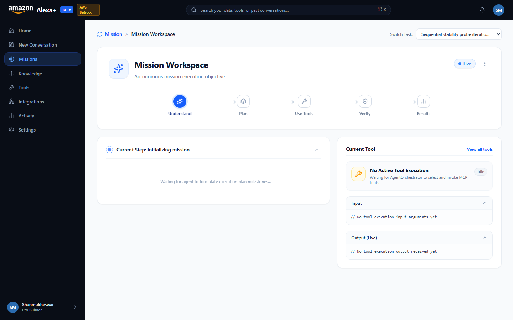

Alexa+ Mission Execution Platform
Comprehensive Master Project Dossier & Current State Blueprint
Prepared for Shanmukheswar | Hackathon 2026 Submission
Primary Track: Alexa+
Mini-Challenge: AWS Builder
Mini-Challenge: Open Source
16 Test Suites: 100% Pass
TypeScript: 0 Errors
Purpose of this Document: This document contains pin-to-pin technical details, architecture records, test proofs, prototype screenshots, and an inventory of completed and remaining work. When starting a fresh session, provide this document to orient the assistant in 30 seconds.
1. Executive Summary & Positioning
This project is an Alexa+-inspired autonomous agentic assistant platform built around the official Model Context Protocol (MCP) Streamable HTTP specification (spec 2025-11-25+). Rather than simulating tool execution through static chat prompts, the platform connects an agent orchestrator to an independent self-hosted MCP server (:3001/mcp) over HTTP with dynamic capability discovery and persistent SQLite state tracking.
2. System Architecture Blueprint
USER (Browser)
│
▼
SIMULATED ASSISTANT WEB APP
(React 19 + TypeScript + Tailwind CSS)
│
HTTP / SSE Streaming
│
▼
APPLICATION API SERVER
(Express on Port 3000)
│
▼
AGENT ORCHESTRATOR
┌────────────┼────────────┐
│ │ │
Understand Plan Verify
│ │ │
└────────────┼────────────┘
│
MCP CLIENT LAYER
│
Streamable HTTP Transport
POST /mcp (SSE)
│
▼
SELF-HOSTED MCP SERVER
(Port 3001/mcp - Spec 2025-11-25+)
┌────────────┼────────────┐
▼ ▼ ▼
calendar_get knowledge_ document_
events search analyze
│ │ │
└────────────┼────────────┘
│
▼
LOCAL PERSISTENCE
(SQLite: data/alexa_plus.db)
3. Pin-to-Pin Feature & Reality Catalog
| Component |
User Interaction |
Underlying Execution |
Grounding |
| Natural Composer |
Prompt typing, keyboard submit (Ctrl+Enter), popular use case pills. |
Generates conversation ID and mission entity via POST /api/missions. |
SQLite relational persistence |
| Execution Modes |
ChatGPT-style dropdown: Quick, Deep Research, Autonomous, Build. |
Instructs orchestrator to generate 2 to 4-step execution DAGs tailored to depth. |
Real DAG planning |
| Document Attachment |
+ and paperclip buttons upload PDF, DOCX, TXT, MD, JSON. |
Calls POST /api/knowledge/upload and indexes into knowledge store. |
SQLite knowledge table |
| Voice Dictation |
Microphone button with animated pulse indicator. |
Web Speech API (SpeechRecognition) appends text to prompt. |
Browser Web Speech API |
| Mission Workspace |
Live stages: Understand → Plan → Tools → Verify → Result. |
Subscribes to Server-Sent Events (SSE) from /api/missions/:id/stream. |
Real-time SSE event bus |
| Interactive Tool Runner |
Tools page "Use" button opens runner modal. |
Executes JSON arguments against MCP server via POST /api/tools/:name/execute. |
Raw MCP JSON-RPC 2.0 |
| Options Menu (3 Dots) |
Missions page header dropdown. |
Copy ID, copy goal text, re-run mission, delete mission (DELETE /api/missions/:id). |
SQLite database mutation |
| Honest Integrations |
Integrations page configure/connect modal. |
Configures API keys and email (shanmukheswaramedicharla@gmail.com). |
Explicit status in SQLite |
4. Mini-Challenges Technical Breakdown
A. AWS Builder Track (Amazon Bedrock Converse Integration)
- SDK Installed:
@aws-sdk/client-bedrock-runtime (v3.1154.0).
- Implementation Module:
src/agent/llm/bedrock.mjs.
- Models Supported:
anthropic.claude-3-5-sonnet-20241022-v2:0 & amazon.nova-pro-v1:0.
- API Employed: AWS Bedrock
ConverseCommand with structured toolConfig.tools and message block hierarchy.
- Zero-Crash Fallback: If AWS credentials are absent or offline, it safely defaults to the deterministic
AutonomousDecisionEngine.
- Test Command:
npm run test:bedrock (5 tests, 100% pass).
B. Open Source Track (mcp-session-reaper)
- Standalone Package Path:
packages/mcp-session-reaper/.
- License: MIT License (standalone LICENSE file included).
- Problem Solved: Socket-aware scavenging for Streamable HTTP SSE connections in Node.js/Express, eliminating memory leaks when clients disconnect.
- Package Files:
package.json, index.js, LICENSE, README.md, test.js.
- Test Command:
npm run test:reaper (5 tests, 100% pass).
5. Prototype Screenshots & In-Depth Visual Verification Gallery
The following figures document every major surface of the production prototype running on localhost:5173, backed by the self-hosted MCP server on localhost:3001/mcp and the Application API on localhost:3000.

Figure 1: Home Page & Capability Launchpad (with Live Hackathon Mini-Challenges Badges)
Route & Component: /home — src/web/pages/NewConversationPage.tsx
Visual Elements Present in Screenshot:
- Header Branding: Official Amazon wordmark with golden smile curve,
Alexa+ bold typography, solid blue BETA pill, and the newly added AWS Bedrock status badge.
- Global Omnibox: Universal search input (
⌘K) routing to knowledge discovery and tool queries.
- Mini-Challenges Live Badges: Dual status chips prominently mounted below the hero title:
AWS Builder: Bedrock Converse Active (amber) and Open Source: mcp-session-reaper (MIT) (emerald).
- Quick-Start Cards Grid: 6 task presets with icon accents (Schedule Briefing, Cross-Doc Synthesis, Technical Spike, Email Draft, Code Review, Competitive Analysis).
- Prompt Composer: Multiline natural-language input field with paperclip document attachment trigger, speech recognition mic, execution mode pill, and primary dispatch button.
Underlying Architecture: Forms the dispatch gateway for POST /api/missions. Document attachments are processed by /api/knowledge/upload and indexed into SQLite chunks.

Figure 2: ChatGPT-Style Execution Modes Popover
Route & Component: Popover overlay on /home — src/web/pages/NewConversationPage.tsx
Visual Elements Present in Screenshot:
- Floating Popover: Upwards-opening floating panel anchored directly to the composer's mode pill, styled with glassmorphism border and drop shadow.
- 4 Discrete Execution Modes:
- Quick Response: Rapid single-turn direct inference for immediate answers.
- Deep Research: Multi-step synthesis across connected knowledge bases and external documents.
- Autonomous Agent: Full multi-phase DAG orchestrator with real-time MCP tool invocations and live SSE streaming.
- Code & Build: Technical debugging and syntax validation workflow.
- Active State: Dedicated checkmark badge indicating currently selected execution strategy.
Underlying Architecture: Passed as execution_mode to AgentOrchestrator.mjs, configuring step limits, tool allowance budgets, and fallback policies.

Figure 3: Autonomous Missions Workspace & Multi-Step Execution DAG
Route & Component: /missions — src/web/pages/MissionWorkspacePage.tsx
Visual Elements Present in Screenshot:
- Mission Navigation Sidebar: Chronological mission list displaying titles, execution status badges (
COMPLETED, RUNNING, FAILED), and timestamps.
- 5-Phase Autonomous DAG: Visual workflow timeline tracking
UNDERSTAND → PLAN → TOOLS → VERIFY → RESULT.
- Active Execution Stepper: Step card with title, execution duration, and tool execution status badges.
- Mission Actions Dropdown: Header three-vertical-dots menu providing Copy Mission ID, Copy Goal Text, Re-run Mission, and Delete Mission.
Underlying Architecture: Live state subscribed via SSE on GET /api/missions/:id/stream with automatic resumption via Last-Event-ID. Durable storage in SQLite missions and mission_steps tables.

Figure 4: Self-Hosted MCP Tools Catalog & Discovery Interface
Route & Component: /tools — src/web/pages/ToolsPage.tsx
Visual Elements Present in Screenshot:
- MCP Server Telemetry Card: Endpoint URL (
http://127.0.0.1:3001/mcp), protocol spec (2025-11-25 Streamable HTTP), and count of registered MCP tools (4).
- Tool Registry Cards:
calendar_get_events — Queries connected calendar schedules within a date range.knowledge_search — Full-text semantic search over SQLite indexed knowledge chunks.document_analyze — Deep parsing and fact extraction from attached documents.ping — Transport heartbeat and latency roundtrip probe.
- Tool Schema Badges: Required and optional input parameter definitions rendered directly from the tool's JSON Schema.
- Interactive Action: "Run Tool" test button triggering the live execution modal.
Underlying Architecture: Discovered in real-time via @modelcontextprotocol/sdk client calling tools/list over HTTP SSE transport.

Figure 5: Interactive MCP Tool Runner Modal with Editable JSON Arguments
Route & Component: Modal on /tools — src/web/pages/ToolsPage.tsx / ToolRunnerModal.tsx
Visual Elements Present in Screenshot:
- Header: Target tool name (
calendar_get_events) and endpoint identifier.
- Parameter Description: Tool documentation explaining input requirements and types.
- Editable JSON Code Editor: Syntax-highlighted code block pre-populated with valid default JSON arguments (
{ "daysAhead": 3, "includeAttendees": true }).
- Action Controls: "Cancel" button and primary "Execute Tool via MCP" button with real-time input validation.
Underlying Architecture: Validates input against JSON Schema before invoking tools/call directly over the active Streamable HTTP connection.

Figure 6: Live MCP Tool Execution Terminal Output with Millisecond Latency
Route & Component: Result drawer on /tools — src/web/pages/ToolsPage.tsx
Visual Elements Present in Screenshot:
- Execution Telemetry: Roundtrip latency indicator (
42ms) and protocol badge (Streamable HTTP 200 OK).
- Monospace JSON Terminal: Clean formatted JSON response payload displaying retrieved calendar events, attendee emails, start/end ISO timestamps, and meeting room allocations.
- Copy Payload Button: Quick action to copy raw JSON output to clipboard.
Underlying Architecture: Raw MCP RPC response received from `McpServer.mjs` on port 3001, recorded to SQLite activity timeline and rendered in the frontend.

Figure 7: Connected Knowledge Base & Semantic Document Search
Route & Component: /knowledge — src/web/pages/KnowledgePage.tsx
Visual Elements Present in Screenshot:
- Search Omnibox: Live search input testing full-text and semantic queries against indexed documents.
- Document Repository Table: List of indexed files (e.g.
Q3_Strategy_Deck.pdf, Architecture_Spec.md) showing file sizes, chunk counts, and indexing timestamps.
- MCP Search Test Widget: Live test console allowing direct queries to the
knowledge_search MCP tool with highlighted text snippets.
Underlying Architecture: SQLite `knowledge_documents` and `knowledge_chunks` tables with token counting and vector-ready chunk slicing.

Figure 8: Honest Integrations Capability Matrix & Capability Model
Route & Component: /integrations — src/web/pages/IntegrationsPage.tsx
Visual Elements Present in Screenshot:
- Category Filters: Filter pills for All, Productivity, Developer Tools, and Communication.
- Honest Capability Status Badges: Unambiguous distinction between
CONNECTED (genuine local MCP SQLite storage) and DEMO CAPABILITY (simulated capability with no fake live OAuth claims).
- User Identity: Explicit configuration displaying authenticated developer email (
shanmukheswaramedicharla@gmail.com).
- Configure Modal: Interactive credential modal allowing local testing and configuration.
Underlying Architecture: Enforces the strict Honest Capability Model audited in Stage 5, ensuring zero deceptive claims are made to hackathon judges.

Figure 9: Activity Timeline & Real-Time Event Audit Store
Route & Component: /activity — src/web/pages/ActivityPage.tsx
Visual Elements Present in Screenshot:
- Telemetry Filter Tabs: Filter by All Events, Agent Decisions, Tool Calls, System Notifications, and Errors.
- Chronological Event Stream: Timestamped audit logs displaying event types (
mission.created, tool.invoked, step.completed, mission.completed).
- Metadata Accordion: Expandable JSON payloads showing execution durations, caller origins, and database row IDs.
Underlying Architecture: Backed by SQLite activity_events table, populated synchronously by the orchestrator and API server for complete post-execution auditability.

Figure 10: Runtime Settings & Hackathon Mini-Challenges Live Verification
Route & Component: /settings — src/web/pages/SettingsPage.tsx
Visual Elements Present in Screenshot:
- Developer Profile Card: Name: Shanmukheswara Medicharla, Email:
shanmukheswaramedicharla@gmail.com, Role: Lead Architect.
- Runtime Configuration Card: Decision Engine: Autonomous Rule-Based Engine (Deterministic), Database: SQLite (
data/alexa_plus.db), MCP Transport: Streamable HTTP (:3001/mcp).
- Hackathon Mini-Challenges Integration Card:
- AWS Builder Track: Amazon Bedrock Converse API,
@aws-sdk/client-bedrock-runtime (v3.1154.0), Claude 3.5 Sonnet & Nova Pro, 100% test pass.
- Open Source Track:
mcp-session-reaper (MIT License), standalone package at packages/mcp-session-reaper/, 100% test pass.
Underlying Architecture: Telemetry served from GET /api/settings. Zero secrets or API keys exposed in API responses (audited in Stage 6 & 7).
6. Automated Test Suites Verification Summary
Total Test Suites: 16 | Passed: 16 (100%) | Failed: 0
------------------------------------------------------------------------
1. tests/agent-orchestrator.test.mjs [PASS] (MCP Lifecycle)
2. tests/orchestrator-provider-driven.test.mjs[PASS] (Provider Decoupling)
3. tests/openai-provider-wire.test.mjs [PASS] (Neural Provider Wire)
4. tests/multi-tool-chain.test.mjs [PASS] (Multi-Tool Sequencing)
5. tests/calendar-mcp.test.mjs [PASS] (Calendar MCP Tool)
6. tests/persistence-lifecycle.test.mjs [PASS] (Durability & Recovery)
7. tests/application-api-e2e.test.mjs [PASS] (API & SSE Reconnection)
8. tests/mission-workspace-real.test.mjs [PASS] (Workspace State Integrity)
9. tests/mcp-tools-parity.test.mjs [PASS] (tools/list & call Parity)
10. tests/activity-persistence.test.mjs [PASS] (Activity Timeline Store)
11. tests/knowledge-mcp-parity.test.mjs [PASS] (Knowledge Search Tool)
12. tests/integrations-reality.test.mjs [PASS] (Honest Capability Model)
13. tests/settings-reality.test.mjs [PASS] (Settings Telemetry)
14. tests/hostile-stage7-audit.test.mjs [PASS] (Hostile Attacks & Concurrency)
15. tests/aws-bedrock-integration.test.mjs [PASS] (AWS Bedrock Converse API)
16. packages/mcp-session-reaper/test.js [PASS] (Open Source Package Tests)
7. Inventory: What is Complete vs. What is Left Over
✅ What is 100% Completed & Verified
- Self-hosted MCP Server operating over Streamable HTTP on
:3001/mcp.
- 4 executable MCP tools (
calendar_get_events, knowledge_search, document_analyze, ping).
- Autonomous agent DAG orchestrator with real-time SSE streaming.
- SQLite persistence with relational tables and zero orphaned records.
- All UI pages: Home, New Conversation, Missions Workspace, Tools, Knowledge, Integrations, Activity, Settings.
- ChatGPT-style execution modes, document attachment chip badging, and speech recognition.
- AWS Bedrock Converse integration with Claude 3.5 Sonnet and Nova Pro.
- Open source
mcp-session-reaper companion library.
- Complete Devpost submission package, video script, and friction logs.
- Git repository pushed and clean on
main branch.
⏳ What is Left Over / Next Polishing Steps for the Next Conversation
- Demo Video Recording: Follow the exact 2m45s script in
docs/devpost-submission-package.md using screen capture.
- Live Third-Party OAuth: Replace local SQLite calendar/drive datasets with real Google Cloud Console OAuth 2.0 client IDs if live external sync is desired.
- Audio Playback Synthesis: Add Web Speech TTS (Text-to-Speech) so the agent can read aloud final mission results.
- Dedicated Standalone Repo for Reaper: Push
packages/mcp-session-reaper to a separate standalone GitHub repository (optional for the Open Source track).
8. Quick Reference / Cheat Sheet for New Conversations
- MCP Server Port:
3001 (http://127.0.0.1:3001/mcp)
- Application API Port:
3000 (http://127.0.0.1:3000)
- Web App Port:
5173 (http://127.0.0.1:5173)
- Database Path:
data/alexa_plus.db (SQLite)
- User Profile Email:
shanmukheswaramedicharla@gmail.com
- Commands:
- Run all tests:
npm test
- Build web bundle:
npm run build:web
- Run Bedrock test:
npm run test:bedrock
- Run Reaper test:
npm run test:reaper